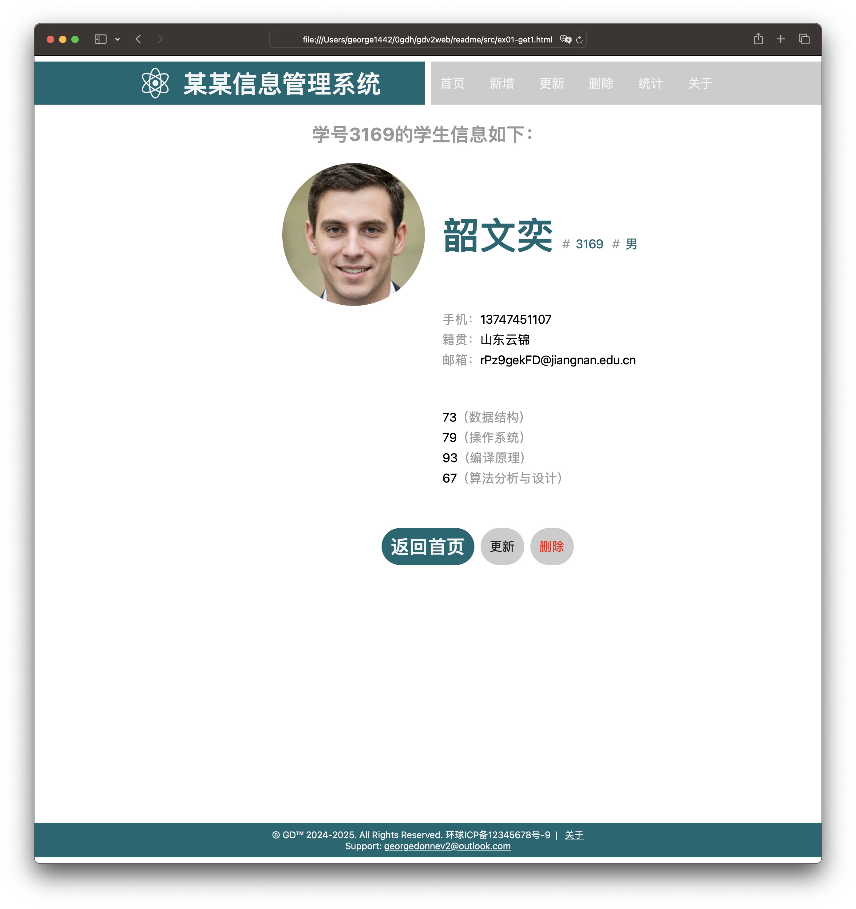
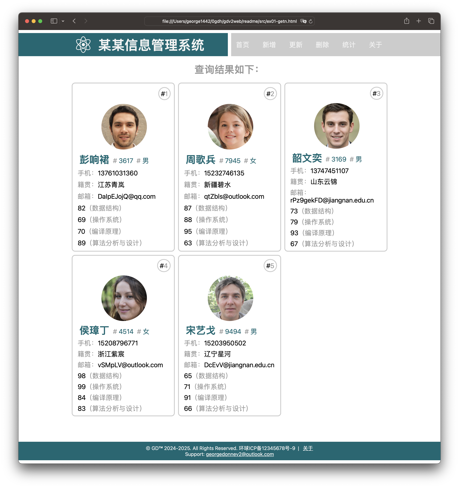
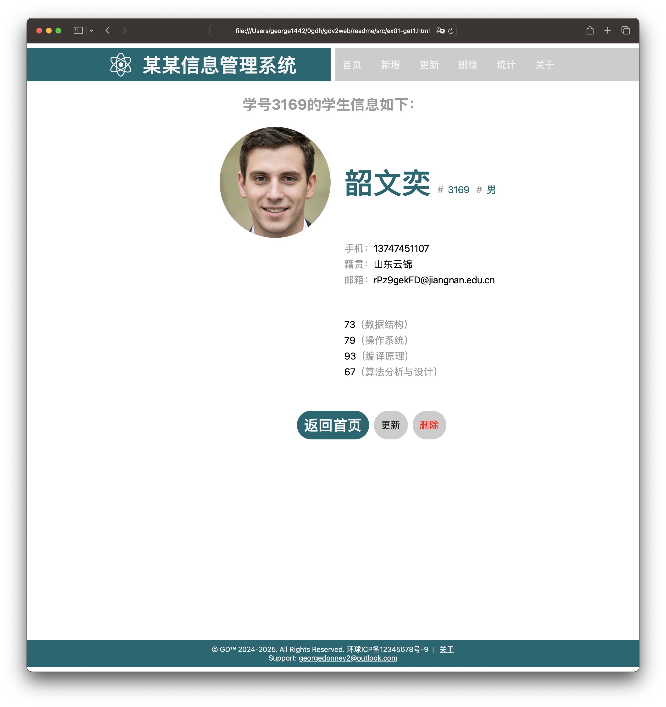
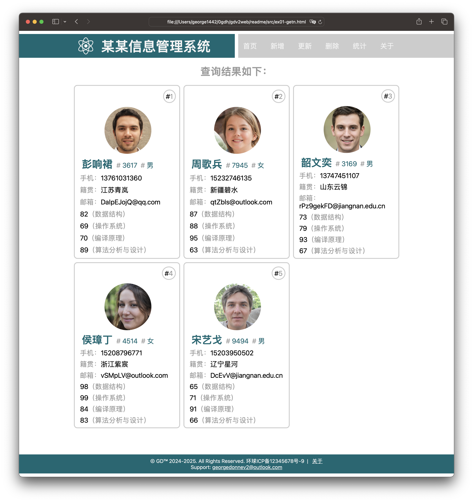

前言
本文描述了用于某某信息管理系统的几个主要界面的编写过程和样例，仅供感兴趣读者参考。用于《某某信息管理系统的Web界面开发指南》（以下简称《Web界面开发指南》），请访问链接获取更多信息。界面样例如何和后台结合起来，请参考《Web界面开发指南》之“编写Web后台服务器处理函数”。
以下是部分主要界面的样例。从左到右、从上到下依次为：主界面（查询）、记录详情界面--1个、记录详情界面--多个、新增记录界面。更新记录界面和新增记录类似，相关信息填入从数据库中查询得到的信息即可。
 



本文后续章节讲解界面样例的编写过程。
主界面（查询）
为了实现语义化标记，HTML 提供了明确这些区段的专用标签，例如：
- <header>：页眉。
- <nav>：导航栏。
- <main>：主内容。主内容中还可以有各种子内容区段，可用<article>、<section> 和 <div> 等元素表示。
- <aside>：侧边栏，经常嵌套在 <main> 中。
- <footer>：页脚。
界面样例中，使用了页面header、导航栏nav、主内容main、页脚footer，尚未使用侧边栏aside。html代码可对照界面样例显示、代码注释（在下载的代码中有）理解，在此不赘述。以下重点描述css代码。
css-line-6-19左右，:root
1、定义全局变量
- 定义了一些全局变量，非必须。也可不用定义，在css代码中直接写，比如
font-size: 16px。
2、网站配色
- 网站配色。可以从比较好看的海报或者网站上抽取颜色。将海报图片或网站截图上传到 adobe color网站adobe color，可生成一组配色。
- 或者在adobe color网站adobe color 选取一组配色，也是可以的。
css-line-24-28左右，*
- 浏览器显示每个元素（比如p、li、a等），都是当做一个“盒子”。盒子是俄罗斯套娃样子，从里到外依次是：内容content、内边距padding、边框 border、外边距margin。可以看看《图解CSS： CSS 盒模型》（链接）了解下。
- 内边距padding、外边距margin都先清零，以便精确设置样式。由于某些元素有默认的padding和margin。
box-sizing: border-box。按边框border盒子算大小，还有个常用选项是 content-box（按内容content盒子算大小）。假定 width=100px，border=1px（四周），padding=2px（四周），在box-sizing:border-box时，内容content的宽度= 100 - 2*1px -2*2px = 94px；在box-sizing:content-box时，内容content宽度是100px，这个元素在页面上占据 106px = 100 + 2*1px + 2*2px。开发人员通常设置 box-sizing: border-box。
css：38-62行左右
在CSS中设置样式，首先要告诉CSS针对什么内容设置格式。这里涉及了CSS的选择器，常见的几种方式如下。关于CSS选择器的更多信息，可参考CSS3 选择器——基本选择器。
-
元素选择器。比如p，就是针对
<p></p>做样式设置。比如body，就是针对<body></body>做样式设置。 - 类选择器。比如 span.rec-value或者 .rec-value，就是针对 class="rec-value" 的元素做样式设置，比如 <span class="rec-value"></span>。
-
id选择器。比如 #main-home，就是针对 id="main-get" 的元素做样式设置。比如
<main id="main-get"></main>。 - 后代选择器。比如 #main-home p，是针对 #main-home 里面的 p 做样式设置，而不是对 header 里面的 p 做样式设置。
针对body样式设置的一些说明：
- 宽度和高度。宽度是100%的可视宽度（vw），最小宽度是 480px（低于480px就不能再缩小了）。最小高度是 100%可视高度（vh），让页脚始终放在底部（即使中间内容不多的时候）。
- body设置为grid网格布局。grid网格布局就是把web页面在水平方向分成若干列，在垂直方面分成若干行，然后将相关内容放置到对应的列和行中。关于网格grid布局，更多详情请参考本文参考资料之2022年不能再错过CSS网格布局了。
- 比如，将body分成 16 列、3行。fr可以理解为等分的意思，16列都是一样宽的。第1行和第3行的高度是自动（根据放入的内容而自动设置高度），第2行的最小值是100px和垂直方向1等分（1fr）的最小值，最大值是100px和1fr的最大值。详见下图中的灰色网格线（红色网格线是main部分，重叠在body灰色网格线之上）。
- 比如页眉header。放在（body）的第1行、第1列（跨8列）。参考css 69-71行。
- 比如导航栏nav。放在（body）的第1行、第9列（跨8列）。参考css 110-111行。
- 比如主内容main。放在（body）的第2行、第3列（跨12列），如下图中红色网格所示。参考css 169-170行。12列是在印刷行业使用广泛的布局，列数太少则控制不够精确，列数太多则排版过于复杂。body等分为16列，真正主内容只使用中间的12列，左右各空2列是模拟印刷行业比较有名的全出血full-bleed布局。
- 比如页脚footer。放在（body）的第3行、第1列（跨16列）。参考css 138-139行。
css 168-178行左右：main的布局
-
查询的主内容main设置了id
<main id="main-home">，用于单独设置样式。其他几个页面，共用了页眉header、导航栏nav、页脚footer，主内容main的布局各不相同。 - #main-home 也采用网格grid的布局。grid-template-columns 和 grid-template-rows 只要有一个设置为 subgrid，就是子网格subgrid。还有一种是嵌套网格 nest-grid，就是行数和列数，都和父网格不同，由于过于复杂此处不采用，而采用子网格 subgrid。gap也是继承了父网格。当然gap也可以设置成和父网格不同，但人为增加复杂度且对样式设置无价值。
- main设置了3行。第1行是可视高度的1等分，第2行是2等分（第1行高度的2倍），第3行根据放入内容自动设置高度。
-
justify-items: center。子元素（对孙子等下级元素无效）水平居中对齐。align-items: center是子元素（对孙元素等下级元素无效）垂直居中对齐。也可设置在子元素上，分别是 justify-self 和 align-self。
css 181-215行左右：一组装饰用的logo
- #logo-group 放置在（main的）第1列，跨12列。默认放在（main的）第1行。
- #logo-group 这组logo（有7个组成）的总宽度设置为 50%，是指父元素（即 main）宽度的50%。可以查看的确占了6列即50%宽度。
- #logo-group 内部的7个logo，布局方式是 flex。有兴趣读者可阅读相关材料，此处不展开了。可以看到：grid网格布局和flex灵活布局，通常会相互结合，而不是谁优谁劣，适合的就是好的。
- #logo-group 内部的图片img，设置左右的外边距，让logo之间空开些。
- 采用 nth-child() 选择到第1和第7个logo，设置显示小一些；第2和6大一些；第3和5再大一些；中间的第4个最大，从而形成了一组logo图案。
css 218-247行：form表单
- 相关描述可以参考上述 #logo-group的描述，应该可以理解样式设置。form也是子网格subgrid布局。
- 此处使用了 属性选择器，input[type="submit"] 和 input[type="number"]。当然，也可以定义 class 或 id，从而使用 类选择器 或 id选择器来实现，也是可以的。
css 249-272行：数据库记录显示
- 内部采用了 flex 布局。
- 在3段文字周边显示边框（设置 border），边框圆周半角设置为 50%（每段文字宽或高的50%），从而看上去是个圆。
- 外边距margin做个填充，让3个圆分开一些。margin-bottom更大些，和页脚footer离开多些。
css 109-131行：导航栏nav
- nav a。导航栏里面的几个元素是超链接 a，此处将a 的颜色改成白色，装饰（主要是默认显示下划线）去掉。
- nav a:hover。鼠标移动到上面的效果。用下边框实现了下划线，同时文字变颜色。
页脚footer、页眉header没什么特殊，应该可以基本看懂，此处不赘述了。
查询得到多个记录的显示界面
整体：
- 多个记录的页面，可用于：（1）查询所有记录；（2）或者查询姓名中的1个字；（3）……。按学号查询应该最多得到一条记录，相关页面请参考本文相关章节。
- 主内容 #main-getn 是子网格subgrid（body的子网格），而每个记录详情 .n-details 又是 #main-getn 的子网格。#main-getn 的网格线如下灰色网格线，.n-details 的网格线如下绿色网格线。
css 589-703行：每个记录详情.n-details
- 记录详情作为整体，外面画个框（通过设置 border 属性），圆角（设置 border-radius）。
- 其中照片：宽度50%（就是占了2列），圆角半径50%，最后成为圆。
- 姓名+学号+性别，显示在一起。首先对段落 p 设置 display: inline（默认是要换行的，inline就不换行）。其次在学号（.u-uid）和性别（.u-gender）前面添加 “#”（ &::before {content: "#";}），字体颜色换成深绿色。名字大一些，也是深绿色。
- 其他信息，分别在内容前面加上手机、籍贯、邮箱。
- 成绩。分别在对应成绩后面加上课程名称。
- 计数器 get-rec-counter 用于显示本次查询得到的第几条记录。进入 #main-getn 时重置该计数器，进入记录详情 .n-details 时计数器加1；并通过 .n-details 的子元素 .get-rec-sn 显示出数值，在每个记录框内的右上方。
页眉header、页脚footer、导航栏nav的样式描述，请参考本文的主界面（查询）的相关内容，在此不赘述。
查询结果显示界面
参考查询得到多个记录的显示界面，当前界面的css还是相对好理解的。以下截图中，灰色网格线是body的网格grid布局，黄色网格线是主内容 #main-get 的网格线。
新建记录
以下截图中，绿色网格线是 #main-create 的网格线。主要采用了表单form中的 label 和 input 实现了该界面。css 代码在 278 - 361 行左右。
- 主内容 #main-create（通过css的id选择器来做样式设置，<main id="main-create"></main>），放置在（body网格的）第2行，从第3列开始，跨12列。#main-create内部采用子网格subgrid布局，第1行放置“请输入xx信息”，第2行放置表单form（包括用于输入信息的主体内容和2个按钮）。
- 表单form也是采用网格grid布局，是主内容 #main-create 的子网格。表单form跨12列。其中姓名、学号、手机号码、籍贯、邮箱等，都是放置在第3列、跨6列。采用了不同类型type的输入框input，包括 number、text、email等。
- 学生成绩由标签label（比如“数据结构：”）和成绩输入框组成，定义了 .student-grade 类，也是采用网格布局，是表单form的子网格subgrid。
- 选择性别其实有5个元素组成：3个标签 + 2个 radio类型的输入框input。在“男”标签做了右外边距填充（margin-right），让男和女分开些。
-
几个输入框、选择性别、几个成绩，都画了边框border，2个像素宽、实线、灰色，代码是：
border: 2px solid #999;。边框设置了8px的圆角，看上去柔和些，代码：border-radius: 8px;。 - 2个按钮都是用输入框 input 实现的，新建按钮用 submit 类型的输入框，点击后会提交数据给后台应用。放弃按钮用 button 类型的输入框，只是跳转到首页。按钮的边框圆角 border-radius 设置较大数值比如 100px，就可以实现类似胶囊的效果。背景、字体大小和颜色等，都相对清晰，此处不赘述。
主要参考资料
- 文档与网站架构，MDN
- CSS3 选择器——基本选择器，fedev.cn
- 聊聊input元素，fedev.cn
- 2022年不能再错过 CSS 网格布局了，fedev.cn